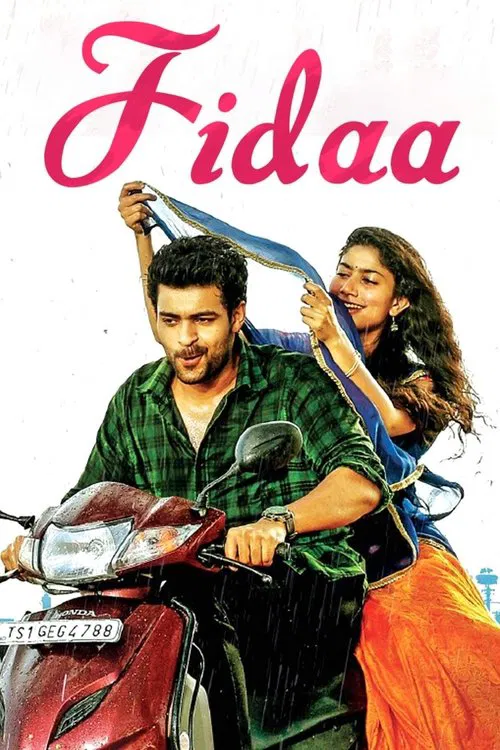
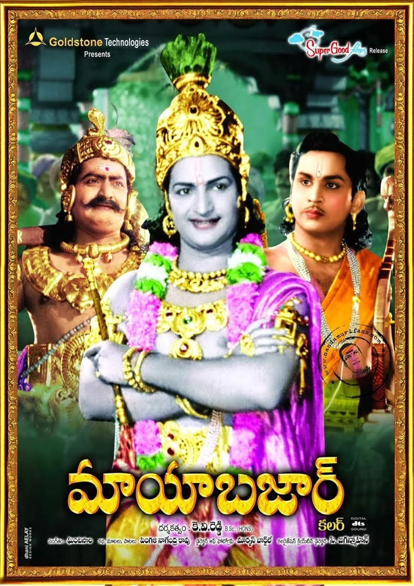
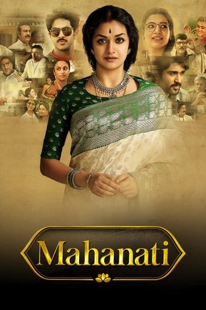
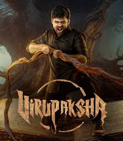
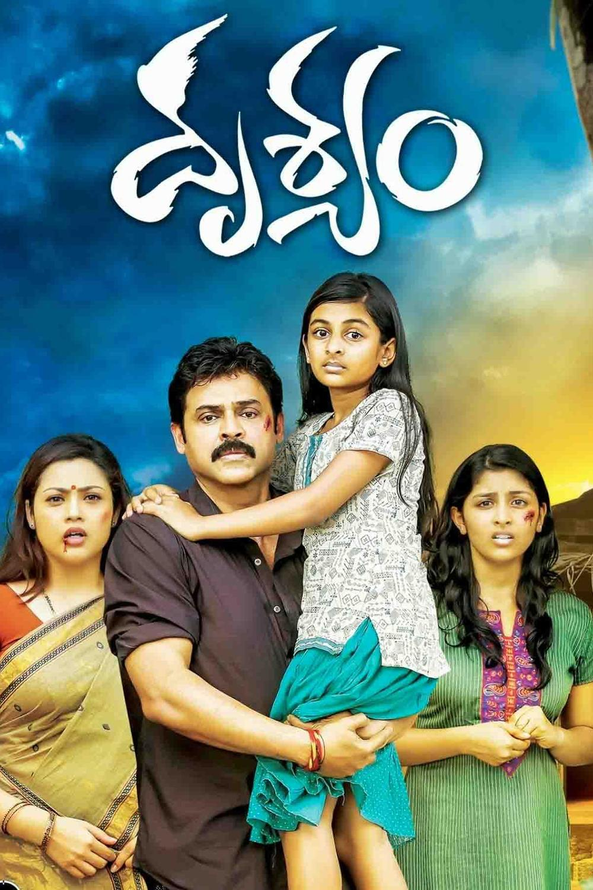

Welcome to my movie showcase webpage, a visually rich and interactive platform designed for movie lovers. This page features a curated collection of movies categorized by different genres, with three movies in each genre. Every movie includes its poster, video song, and audio track, offering an immersive multimedia experience. This is build for bringing entertainment together in one place. Explore, enjoy, and experience like never before!
1. Action
2. Romantic Drama
3. Family Entertainers
4. Drama/Cult Classics
5. Thriller/Mystery
Movies List:
1. Pushpa 2: The Rule (2024)
2. Magadheera (2009)
3. Hanu-Man (2024)
Box Office collection : ₹1740 crore worldwide
Pushpa 2: The Rule is a highly anticipated Telugu action-drama sequel that continues the story of Pushpa Raj (Allu Arjun), a red sandalwood smuggler rising in power against rivals like SP Bhanwar Singh Shekhawat (Fahadh Faasil), focusing on his journey, political maneuvering, and intense confrontations, featuring grand visuals, mass appeal, and elaborate sequences like the iconic Gangamma Jatara where he dresses as a woman, though reviews are mixed on narrative depth vs. cinematic spectacle, with praise for Arjun's performance and criticism for its excessive runtime and focus on hero elevation over story.

You can download listen & download the audio of the above video from here:
Box Office collection : Approx.₹150.5 crore worldwide
Magadheera (2009) is an epic Telugu fantasy-action film directed by S.S. Rajamouli, renowned for its grand scale, stunning visuals, and reincarnation theme, telling the story of a modern-day biker (Ram Charan) who rediscovers his past life as a 17th-century warrior (Kala Bhairava) destined to protect his princess (Kajal Aggarwal) from a vengeful adversary, blending historical romance with high-octane action, becoming a massive box-office success and setting new technical standards in Indian cinema.

You can download listen & download the audio of the above video from here:
Box Office collection : ₹295–350 crore worldwide
Hanu-Man (2024) is a Telugu superhero film by director Prasanth Varma, starring Teja Sajja as Hanumanthu, a small-time thief in the fictional village of Anjanadri who gains the powers of Lord Hanuman after finding a mysterious gem, becoming a protector against evil forces, particularly the villainous Michael, blending Hindu mythology with modern superhero tropes, CGI spectacle, and local Indian masala entertainment to create an underdog story about devotion, strength, and good versus evil. The film, the first in the Prasanth Varma Cinematic Universe (PVCU), is praised for its visual ingenuity, cultural references, and crowd-pleasing nature, despite its simple origin story.

You can download listen & download the audio of the above video from here:
Movies List:
1. Ala Vaikunthapurramuloo (2020)
2. Fidaa (2017)
3. Hi Nanna (2023)
Box Office collection : ₹262–280 crore worldwide
Ala Vaikunthapurramuloo (2020) is a successful Telugu action-comedy starring Allu Arjun and Pooja Hegde, directed by Trivikram Srinivas, that follows Bantu (Allu Arjun) who discovers he was switched at birth with a millionaire's son, leading him to confront his neglectful father and seek his rightful place in the wealthy Vaikunthapuram family, offering a blend of family drama, romance, catchy music (like "Butta Bomma"), and social commentary on class divides. The film became a major entertainer, praised for its stylish presentation, humor, Allu Arjun's performance, and catchy songs, despite some critiques of its familiar tropes.
You can download listen & download the audio of the above video from here:
Box Office collection : ₹90 crore worldwide
Fidaa (2017) is a refreshing Telugu romantic drama directed by Sekhar Kammula, celebrated for its realistic portrayal of love between a free-spirited Telangana girl, Bhanumathi (Sai Pallavi), and a pragmatic NRI doctor, Varun (Varun Tej). The story follows their "love-hate-love" journey, highlighting cultural clashes, personal compromises, and self-discovery as Bhanumathi's grounded rural upbringing contrasts with Varun's US-based life, ultimately showcasing their deep connection amidst familial events and misunderstandings, with Sai Pallavi's energetic performance and authentic dialect being major highlights.
You can download listen & download the audio of the above video from here:
Box Office collection : ₹75 crore worldwide
Hi Nanna (2023) is a heartwarming Telugu drama about Viraj (Nani), a single father and photographer, and his six-year-old daughter Mahi (Kiara Khanna), who has cystic fibrosis. When Mahi's curiosity about her absent mother leads her and their dog Pluto to run away, they meet Yashna (Mrunal Thakur), uncovering a deeply emotional story of love, forgotten memories, and family ties, praised for its performances, direction, and touching portrayal of parenthood and resilience.

You can download listen & download the audio of the above video from here:
Movies List:
1. Nuvvu Naaku Nachchav (2001)
2. F2: Fun and Frustration (2019)
3. Kick (2009)
Box Office collection : ₹18 crore
Nuvvu Naaku Nachchav is a timeless romantic-comedy classic directed by K. Vijay Bhaskar and written by Trivikram Srinivas, widely celebrated for its witty dialogues, situational comedy, and strong family emotions. The film stars Venkatesh as the easygoing and charming Venky, whose arrival at a friend's household complicates the lives of the family members, particularly Prakash Raj and Aarti Agarwal. Despite a simple plot—where the female lead is already engaged—the film excels through its engaging narration, memorable comedy scenes featuring Sunil and Brahmanandam, and a heartwarming romantic progression. Released in 2001, it remains a "feel-good" staple in Telugu cinema, often praised for its perfect balance of humor and sentiment.

You can download listen & download the audio of the above video from here:
Box Office collection : ₹127–140 crore worldwide
F2: Fun and Frustration, directed by Anil Ravipudi, is a high-energy comedy-drama starring Venkatesh, Varun Tej, Tamannaah, and Mehreen Pirzada. The film revolves around the theme of "men are from Mars and women are from Venus," focusing on the frustrations of two men dealing with dominant women in their respective relationships. Primarily known for its relentless comedy in the first half, the film showcases "Vintage" Venkatesh in top form, providing hilarious moments despite a thin storyline. As a major box office success in 2019, F2 delivered a commercial entertainer that resonated with family audiences, grossing over ₹185 crore worldwide.

You can download listen & download the audio of the above video from here:
Box Office collection : ₹30 crore
Kick (2009) is a blockbuster action-comedy directed by Surender Reddy that solidified Ravi Teja’s status as "Mass Maharaja". The story follows Kalyan (Ravi Teja), a young man who lives for a "kick" (thrill) in every situation, leading to a unique narrative that blends humor with unexpected plot twists. Alongside Ileana D'Cruz, who played the female lead, the film featured iconic comedy sequences between Ravi Teja and Brahmanandam. Known for its high energy, catchy music, and a strong, clever premise, Kick was a massive success, establishing a new trend in Tollywood action-comedy and spawning a popular Hindi remake.
You can download listen & download the audio of the above video from here:
Movies List:
1. Mayabazar (1957)
2. Mahanati (2018)
3. Vedam (2010)
Box Office collection : The film was the first South Indian film to gross around ₹2 crore
Directed by Kadiri Venkata Reddy, Mayabazar is a landmark Indian mythological fantasy film that is frequently celebrated as one of the greatest classics in Telugu and Tamil cinema. Based on the folk tale Sasirekha Parinayam, which draws from the Mahabharata, the film chronicles Lord Krishna's (NTR) plan to reunite Arjuna's son Abhimanyu (ANR) with his love, Balarama's daughter Sasirekha (Savitri), after her parents break their promise due to the Pandavas' exile. The film is renowned for S.V. Ranga Rao's iconic portrayal of Ghatotkacha, who uses magical powers—most notably in the song "Vivaha Bhojanambu"—to outwit the Kauravas and secure the lovers' union. With its innovative special effects for its time, brilliant performances, and timeless music, the film was a massive commercial success and holds a 100-day run in many theaters, cementing its place as a cultural milestone.
You can download listen & download the audio of the above video from here:
Box Office collection : ₹83 crore worldwide
Mahanati (released as Nadigaiyar Thilagam in Tamil) is a critically acclaimed biographical drama based on the life of the legendary South Indian actress Savitri, directed by Nag Ashwin. The film masterfully depicts the rise of Savitri from humble beginnings to becoming the first female superstar of South Indian cinema, while also exploring her tragic downfall, marked by a tumultuous personal life and addiction. Keerthy Suresh received universal acclaim for her performance, winning the National Film Award for Best Actress for her portrayal. The film was lauded for its exceptional screenplay, which blends the past with a parallel narrative of a journalist, and it emerged as a massive commercial success, grossing over ₹83 crore. It is highly regarded as a respectful and emotionally resonant tribute to a cinematic icon.
You can download listen & download the audio of the above video from here:
Box Office collection : ₹10.5 crore
Directed by Krish Jagarlamudi, Vedam is a groundbreaking anthology film that pioneered alternate storytelling in Telugu cinema by interweaving five distinct storylines. The narrative follows characters from different strata of society—a cable operator (Allu Arjun), a prostitute (Anushka Shetty), a rockstar (Manchu Manoj), a debt-ridden weaver (Nagayya), and a Muslim man (Manoj Bajpai)—whose lives converge during a dramatic terrorist attack in a Hyderabad hospital. The film is celebrated for its realistic portrayal of urban struggles, social injustice, and redemption, leading to a powerful climax. Vedam was highly acclaimed for its content-driven approach, brilliant performances, and technical prowess, notably earning multiple Filmfare awards and cementing its status as a cult classic.
You can download listen & download the audio of the above video from here:
Movies List:
1. Virupaksha (2023)
2. Drushyam (2014)
3. Aswathama (2020)
Box Office collection : Approx. ₹90–103 Crore worldwide
Directed by Karthik Varma Dandu and produced by Sukumar, Virupaksha is a 2023 Telugu-language supernatural horror thriller that became a major box office success. Set in the 1990s, the film stars Sai Dharam Tej and Samyuktha Menon, following a man named Surya who visits his ancestral village, Rudravanam. The village is suddenly plagued by a series of mysterious, occult-related deaths after a woman curses it, forcing Surya to uncover the dark secrets behind the chaos. The film was praised for its gripping screenplay, intense atmosphere, and technical aspects like sound design and cinematography.
You can download listen & download the audio of the above video from here:
Box Office collection : ₹20 crore worldwide
Drushyam is a 2014 Telugu-language crime thriller directed by Sripriya and a faithful remake of the 2013 Malayalam hit Drishyam. Starring Venkatesh and Meena, the film focuses on Rambabu, a loving family man and cable TV operator who is a movie buff. When his daughter becomes involved in a crime against a police officer's son, Rambabu uses his knowledge of films to outsmart the police and protect his family. It is considered a suspenseful and tightly scripted drama that was highly successful at the box office.
You can download listen & download the audio of the above video from here:
Box Office collection : ₹15.30 crore worldwide
Released on January 31, 2020, Aswathama is an action-thriller starring Naga Shaurya, who also wrote the story. Directed by Ramana Teja, the movie follows Gana, who returns to India for his sister's wedding only to discover she has been drugged and raped by a psychopathic serial offender. The film focuses on Gana’s intense quest to track down the perpetrator, who is a doctor, and protect other potential victims. It was noted for its raw action sequences and a strong antagonist performance by Jisshu Sengupta, though the plot was considered predictable by some critics.

You can download listen & download the audio of the above video from here:
You’ve reached the final scene of this cinematic space, where visuals, music, and stories come together. From eye-catching posters to powerful video songs and immersive audio, each genre offers a unique mood and moment to explore. This page is designed to let you discover, relive, and enjoy movies in a simple yet engaging way. Whether you came to browse, listen, or feel the rhythm of cinema, we hope this experience stayed with you. Until the next visit—press play on the magic and let the stories continue.